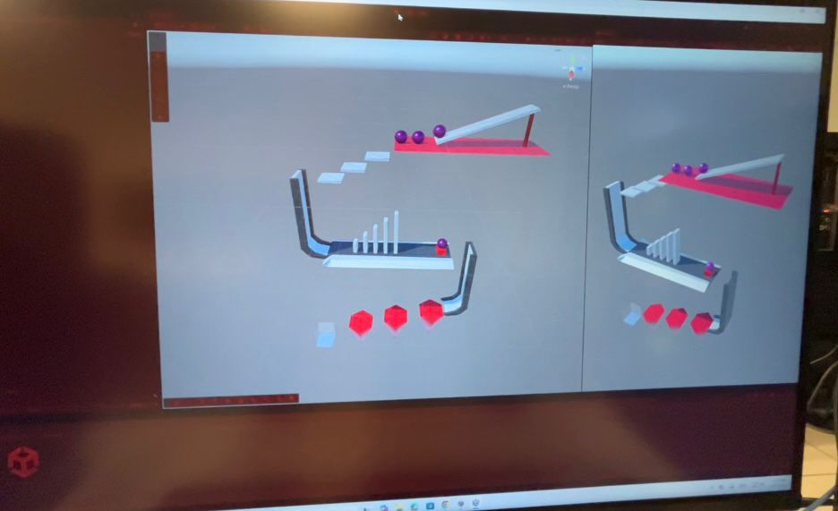

Este proyecto consiste en el diseño y desarrollo de un nivel interactivo realizado en Unity. Se trabajó la composición espacial, iluminación y recorrido del objeto para generar una experiencia inmersiva.
El objetivo fue aplicar principios básicos de Unity utilizando elemntos básicos para un nivel.
